Deep sky
22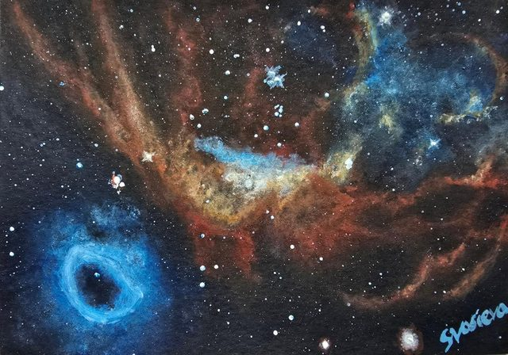
The Cosmic Reef Nebula
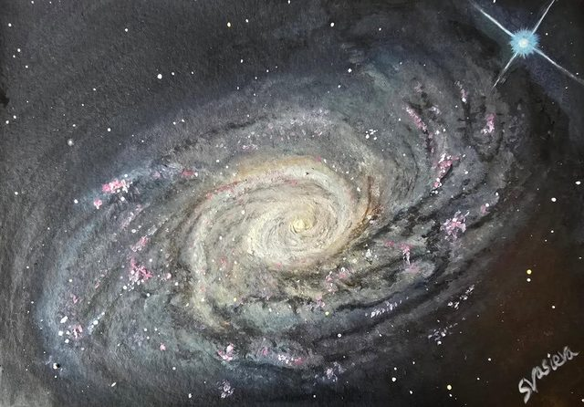
The Sunflower Galaxy (M63)
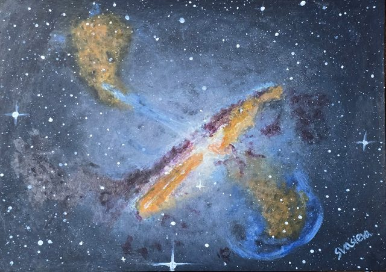
Centaurus A
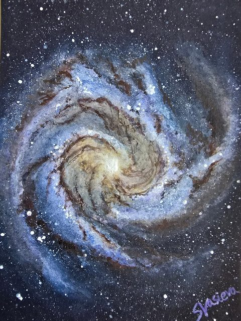
The Southern Pinwheel Galaxy (M83)
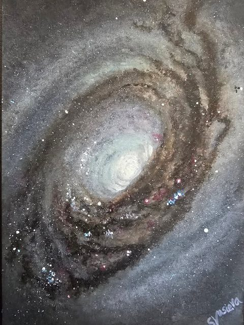
The Black Eye Galaxy (M64)
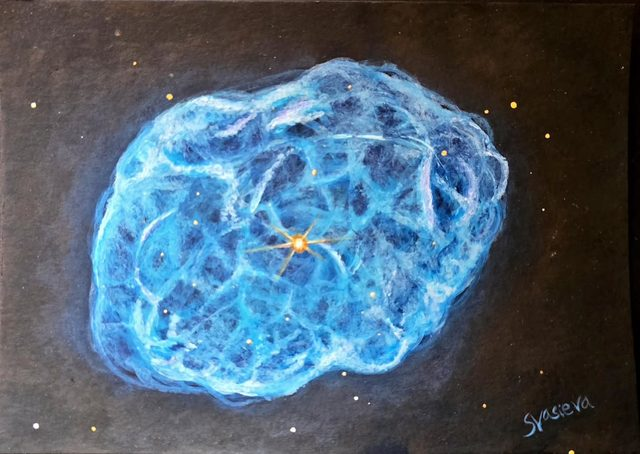
NGC 1501, the Camel's Eye Nebula
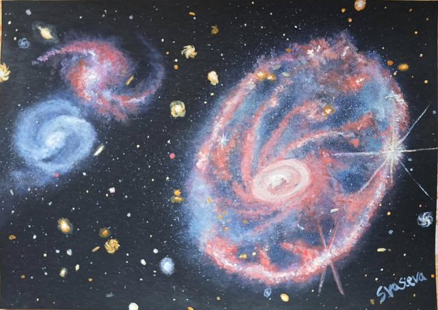
The Cartwheel Galaxy
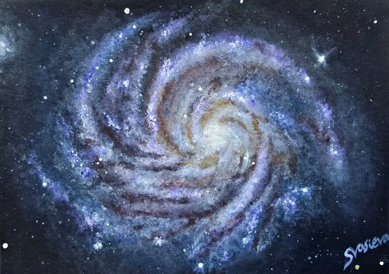
M100, the Mirror Galaxy
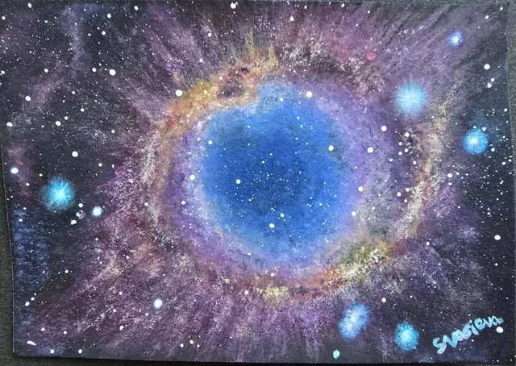
The Helix Nebula (NGC 7293)
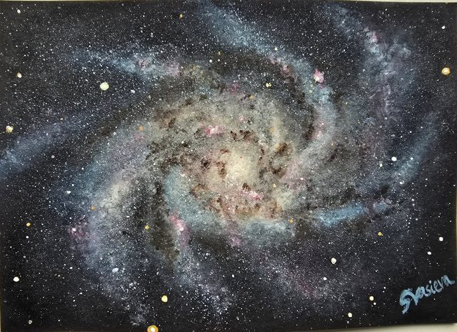
The Triangulum Galaxy (M33)
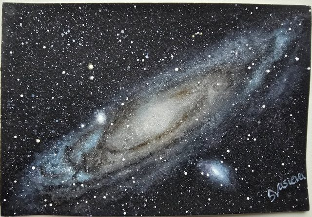
The Andromeda Galaxy (M31)
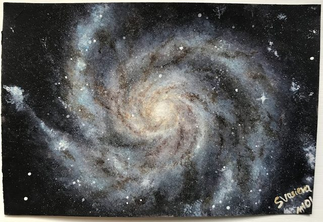
The Pinwheel Galaxy (M101)
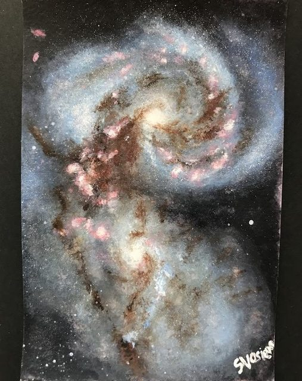
The Antennae Galaxies (NGC 4038/NGC 4039)
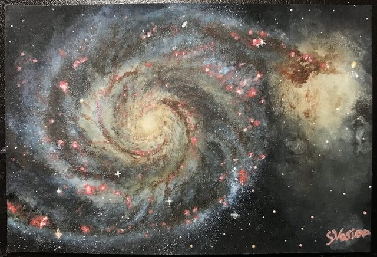
The Whirlpool Galaxy (M51)
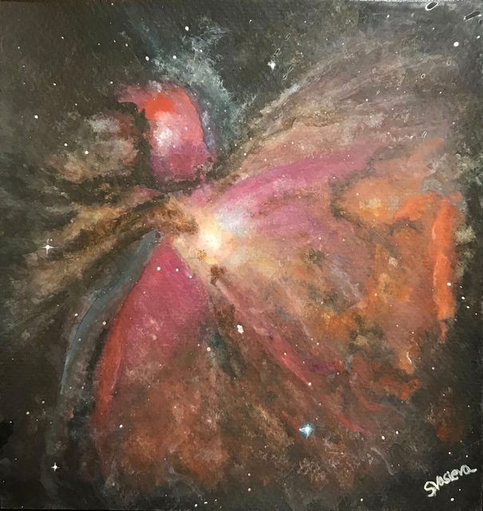
The Orion Nebula (M42)
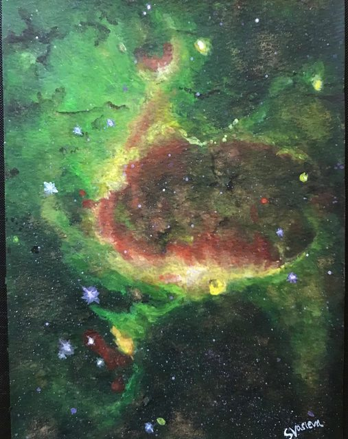
Hierarchical Bubble Structure
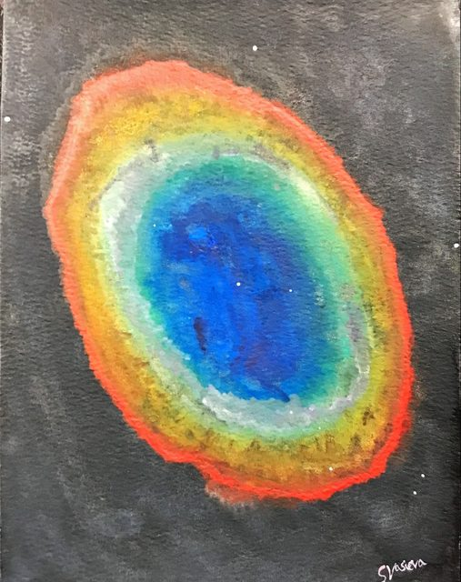
The Ring Nebula (M57)
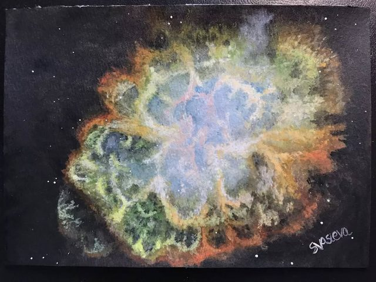
The Crab Nebula (M1)
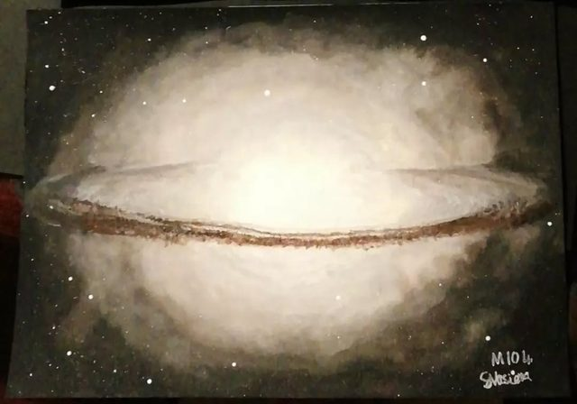
M104, the Sombrero Galaxy
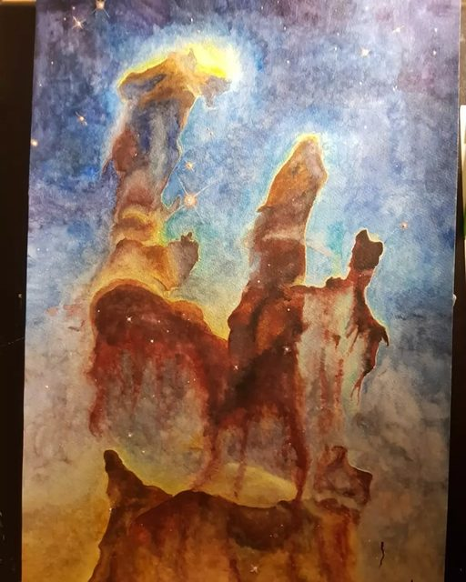
M16, the Eagle Nebula
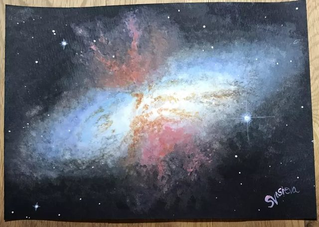
The Cigar Galaxy (M82)
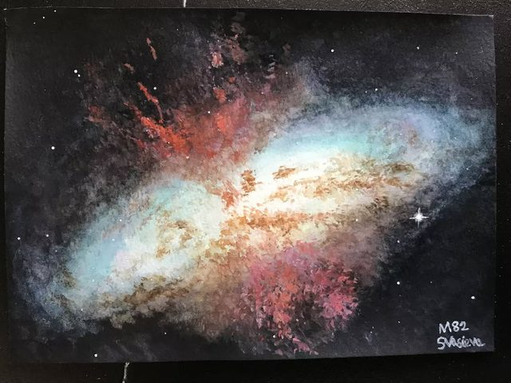